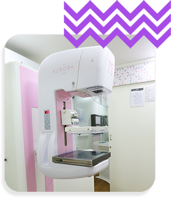

Outubro Rosa

Outubro Rosa 2025 está chegando e, com ele, a oportunidade de reforçar a importância da prevenção e do diagnóstico precoce do câncer de mama. Este movimento global, que teve início na década de 1990, busca conscientizar mulheres e homens sobre a necessidade de cuidar da saúde e realizar exames regulares.
Quais os fatores de risco?
